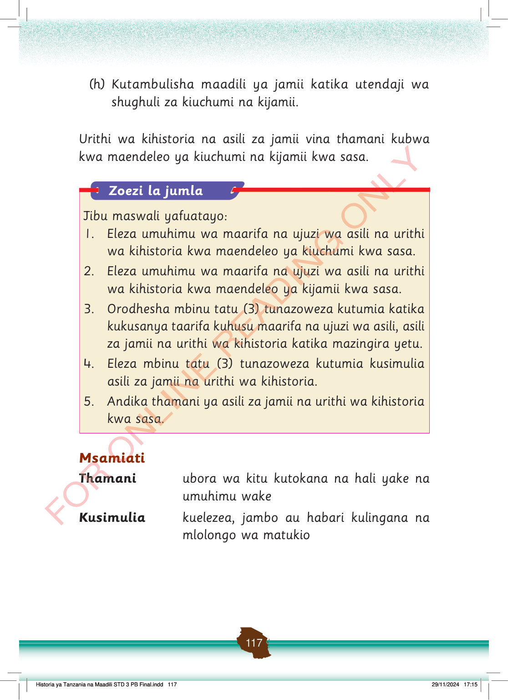

(h) Kutambulisha maadili ya jamii katika utendaji wa shughuli za kiuchumi na kijamii.
Urithi wa kihistoria na asili za jamii vina thamani kubwa kwa maendeleo ya kiuchumi na kijamii kwa sasa.
Zoezi la jumla
Jibu maswali yafuatayo:
1.
Eleza umuhimu wa maarifa na ujuzi wa asili na urithi wa kihistoria kwa maendeleo ya kiuchumi kwa sasa.
2.
Eleza umuhimu wa maarifa na ujuzi wa asili na urithi wa kihistoria kwa maendeleo ya kijamii kwa sasa.
3.
Orodhesha mbinu tatu (3) tunazoweza kutumia katika kukusanya taarifa kuhusu maarifa na ujuzi wa asili, asili za jamii na urithi wa kihistoria katika mazingira yetu.
4.
Eleza mbinu tatu (3) tunazoweza kutumia kusimulia asili za jamii na urithi wa kihistoria.
5.
Andika thamani ya asili za jamii na urithi wa kihistoria kwa sasa.
Msamiati
Thamani
ubora wa kitu kutokana na hali yake na umuhimu wake
Kusimulia
kuelezea, jambo au habari kulingana na mlolongo wa matukio